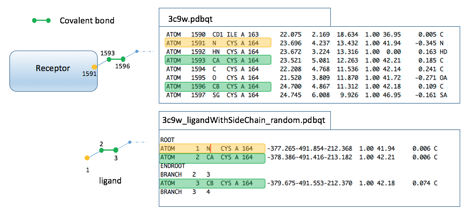

Tutorial: docking a covalently bound ligand
This tutorial re-docks the native covalent ligand of PDB 3C9W. The receptor (3c9w.pdbqt) and the ligand (3c9w_ligandWithSideChain_random.pdbqt) are in the tutorial data.
For covalent docking, the receptor and the covalent ligand must share 3 atoms, as shown below: 2 atoms (green) form the covalent bond, and 1 atom (yellow) is an anchor on the receptor side. These atoms are used to move the ligand into place relative to the receptor and create the covalent bond.

Covalent docking needs no translational points: the covalent bond positions the ligand in the docking box.
You will learn to:
- generate a target file for covalent docking
- run ADFR to dock the ligand
- understand the output of an ADFR docking run
1. Generate the target file
agfr -r data/3c9w.pdbqt -b user 28.565 6.329 6.985 22.5 22.5 22.5 -c 1593 1596 -t 1591 -x A:CYS164 -o 3c9w_cov_cmdlineDetails:
- The box position and size are set by hand here to show this option. This is the only
-b/--boxModeoption that ignores padding. -c/--covalentBondgives the serial numbers of the 2 receptor atoms that form the covalent bond, as they appear in the PDBQT file.-t/--covalentBondTorsionAtomgives the third atom of the covalent attachment, used to compute the torsion angle of the covalent bond.-x/--covalentResidueslimits the traversal of the receptor to a list of residues. This is sometimes needed because covalent ligands can form bonds with the receptor other than the covalent attachment, as the native ligand of 3C9W does. When agfr walks the sub-tree beyond the covalent bond to find which atoms to cut out of the receptor for the affinity maps, that spurious bond would make it include a large part of the receptor, cutting out more than 1600 atoms.-xprevents this.- The target file is called
3c9w_cov_cmdline.trg(-o).
#################################################################
# If you used AGFR in your work, please cite: #
# #
# P.A. Ravindranath S. Forli, D.S. Goodsell, A.J. Olson and #
# M.F. Sanner #
# AutoDockFR: Advances in Protein-Ligand Docking with #
# Explicitly Specified Binding Site Flexibility #
# PLoS Comput Biol 11(12): e1004586 #
# DOI:10.1371/journal.pcbi.1004586 #
# #
# P. Ananad Ravindranath and M.F. Sanner #
# AutoSite: an automated approach for pseudoligands prediction #
# - From ligand binding sites identification to predicting key #
# ligand atoms #
# Bioinformatics (2016) #
# DOI:10.1093/bioinformatics/btw367 #
# #
# Please see http://adfr.scripps.edu for more information. #
#################################################################
Computing grids on fiji a Darwin-17.7.0-x86_64-i386-64bit computer
Date Thu Apr 18 12:31:04 2019
loading receptor: data/3c9w.pdbqt
set box using user
Box center: 28.565 6.329 6.985
Box length: 22.500 22.500 22.500
Box size : 60 60 60
padding : 0.000
spacing : 0.375
setting map types using: all to ['HS', 'Mg', 'HD', 'NA', 'Fe', 'Br', 'NS', 'A', 'C', 'Mn', 'G', 'F', 'I', 'H', 'J', 'N', 'Q', 'P', 'S', 'GA', 'Z', 'Zn', 'Cl', 'Ca', 'OA', 'SA', 'OS']
computing maps for center=(28.565 6.329 6.985) size=(22.500 22.500 22.500) dims=(60 60 60) ...
maps computed in 9.86 (sec)
the following 33 covalent ligand atoms did not contribute to the grid calculation:
A:CYS164:CA,CB,SG,O23,C7,O8,C9,C25,C10,C11,C12,C2,C1,O20,H20,C6,C5,O21,C22,C4,C3,C18,O31,C17,C16,C15,O29,H29,C14,O28,H28,C13,O24,
Adding gradient to maps ...
processing maps ... done 26.2598040104
writing maps ... done 4.58263802528
done adding gradient to maps 33.02 (sec)
making target file 3c9w_cov_cmdline.trg ...done.
done. 45.70 (sec)2. Inspect the target file
about 3c9w_cov_cmdline.trgThis reads and displays the target file’s metadata.
docking target file
date : Thu Apr 18 13:41:22 2019
node : fiji
AGFR : v1.2
receptor : 3c9w.pdbqt
FlexRec : None
covBond : [3c9w:_A:CYS164:N (1591)] 3c9w:_A:CYS164:CA (1593) -- 3c9w:_A:CYS164:CB (1596)
coords : [23.521, 5.081, 12.263] [24.700, 4.867, 11.312] [23.696, 4.237, 13.432]
covRes : A:CYS164
covFile : covalenLig.pdbqt
ignAtms : [1592, 1595, 1596, 3349, 3350, 3351, 3352, 3353, 3354, 3355, 3356, 3357, 3358, 3359, 3360, 3361, 3362, 3363, 3364, 3365, 3366, 3367, 3368, 3369, 3370, 3371, 3372, 3373, 3374, 3375, 3376, 3377, 3378]
box : mode ['user', '28.565', '6.329', '6.985', '22.5', '22.5', '22.5'], padding 4.00
center : 28.565 6.329 6.985
length : 22.500 22.500 22.500
size : 0060 0060 0060
spacing : 0.375
maps :
types : C GA Fe A e d S Q F SA G P Mg Cl Zn OA NS Ca Br Mn OS
NA J I HS HD H Z N W
W map : weight 0.60 entropy -0.20
gradients: Yes, kept largest negative cluster
pocketMode : ['user', '28.565', '6.329', '6.985', '22.5', '22.5', '22.5']
#fillpts : 0 points3. Dock the randomized ligand
adfr -l data/3c9w_ligandWithSideChain_random.pdbqt -t 3c9w_cov_cmdline.trg --jobName covalent -C 1 2 3 --nbRuns 8 --maxEvals 100000 -O --seed 1This re-docks the native ligand after randomizing it (its conformation, position and orientation in the crystal structure were changed at random). -C 1 2 3 names the 3 ligand atoms that match the covalent attachment atoms of the receptor (see the figure above). adfr detects the available cores and uses all of them by default. Here it runs 8 independent searches (--nbRuns 8), each with up to 100,000 evaluations of the scoring function (--maxEvals 100000). By default adfr runs 50 searches of 2.5 million evaluations each. The low values here give a quick run that is enough to show how docking works.
The run writes:
| File | Content |
|---|---|
3c9w_ligandWithSideChain_random_covalent_summary.dlg |
the docking log, with most of what is shown on the terminal |
3c9w_ligandWithSideChain_random_covalent_out.pdbqt |
the docked poses |
3c9w_ligandWithSideChain_random_covalent.dro |
the docking result object: input, output and metadata of this run |
- Output files are named after the ligand, followed by the job name (
--jobName, if given). - The search is stochastic; setting the seed (
--seed) makes a run reproducible for a given version of the code. See the re-docking tutorial.
#################################################################
# If you used ADFR in your work, please cite: #
# #
# P.A. Ravindranath S. Forli, D.S. Goodsell, A.J. Olson and #
# M.F. Sanner #
# #
# AutoDockFR: Advances in Protein-Ligand Docking with #
# Explicitly Specified Binding Site Flexibility #
# PLoS Comput Biol 11(12): e1004586 #
# #
# DOI:10.1371/journal.pcbi.1004586 #
# #
# Please see http://adfr.scripps.edu for more information. #
#################################################################
Docking on fiji a Darwin-17.7.0-x86_64-i386-64bit computer
Date Thu Apr 18 13:46:27 2019
reading ligand /Users/sanner/test1.1/data/3c9w_ligandWithSideChain_random.pdbqt
Detected 4 cores, using 4 cores
Unpacking maps /Users/sanner/test1.1/3c9w_cov_cmdline.trg
Performing search (8 GA evolutions with 100000 maxEvals each) ...
0% 10 20 30 40 50 60 70 80 90 100%
|----|----|----|----|----|----|----|----|----|----|
***************************************************
Termination status
0/ 8 0.0% runs failed
8/ 8 100.0% runs exhausted their evaluations
0/ 8 0.0% runs stopped converged 1 or 2 clusters
0/ 8 0.0% runs stopped after no improvement in clusters
0/ 8 0.0% runs stopped because GA ran out of choices
0/ 8 0.0% runs stopped because GA population converged
Refining results ...
done.
mode | affinity | clust. | ref. | clust. | rmsd | energy | best |
| (kcal/mol) | rmsd | rmsd | size | stdv | stdv | run |
-----+------------+--------+------+--------+------+--------+------+
1 -6.3 0.0 -1.0 8 0.2 0.1 006
Writing poses to 3c9w_ligandWithSideChain_random_covalent_out.pdbqt
Docking performed in 13.17 seconds, i.e. 0 hours 00 minutes 13.165729 seconds
*************** first GA command ***************************
"/Users/sanner/test1.1/mgltools2_x86_64Darwin_1.2/bin/pythonsh" "/Users/sanner/test1.1/ADFR/bin/runOneGA.py" -F "/var/folders/gm/frz8gxj57hzbyyzwtt5bq8m40000gn/T/tmpaAcjqR/3c9w_cov_cmdline" -M rigidReceptor -R "/var/folders/gm/frz8gxj57hzbyyzwtt5bq8m40000gn/T/tmpaAcjqR/3c9w_cov_cmdline/3c9w.pdbqt" "-l" "data/3c9w_ligandWithSideChain_random.pdbqt" "--jobName" "covalent" "-C" "1" "2" "3" "--maxEvals" "100000" "-O" -V "1591" "1593" "1596" -S 1 -j 1 -o "3c9w_ligandWithSideChain_random_covalent/covalent0001.dlg"4. Understanding the output
The messages printed during docking, line by line:
Docking on fiji a Darwin-17.7.0-x86_64-i386-64bit computer
Date Thu Apr 18 13:46:27 2019
reading ligand /Users/sanner/test1.1/data/3c9w_ligandWithSideChain_random.pdbqt
Detected 4 cores, using 4 cores
Unpacking maps /Users/sanner/test1.1/3c9w_cov_cmdline.trg- host name and platform on which the program runs
- date and time of execution
- the ligand docked
- number of cores detected and used
- the target file used
By default ADFR uses all available cores; limit the number with -c.
Performing search (8 GA evolutions with 100000 maxEvals each) ...
0% 10 20 30 40 50 60 70 80 90 100%
|----|----|----|----|----|----|----|----|----|----|
***************************************************
Termination status
0/ 8 0.0% runs failed
8/ 8 100.0% runs exhausted their evaluations
0/ 8 0.0% runs stopped converged 1 or 2 clusters
0/ 8 0.0% runs stopped after no improvement in clusters
0/ 8 0.0% runs stopped because GA ran out of choices
0/ 8 0.0% runs stopped because GA population convergedSee the re-docking tutorial for how to read the termination statistics. The results:
mode | affinity | clust. | ref. | clust. | rmsd | energy | best |
| (kcal/mol) | rmsd | rmsd | size | stdv | stdv | run |
-----+------------+--------+------+--------+------+--------+------+
1 -6.3 0.0 -1.0 8 0.2 0.1 006Here all 8 searches reached the same solution: the first and only solution has a cluster size of 8 (clust. size).
5. Docking metadata
about 3c9w_ligandWithSideChain_random_covalent.droThis displays the metadata of the docking run.
docking result file
date : Thu Apr 18 13:46:27 2019
node : fiji
platform : Darwin-17.7.0-x86_64-i386-64bit
ncores : 4
receptor : 3c9w_cov_cmdline.trg
docking target file
date : Thu Apr 18 13:41:22 2019
node : fiji
AGFR : v1.2
receptor : 3c9w.pdbqt
FlexRec : None
covBond : [3c9w:_A:CYS164:N (1591)] 3c9w:_A:CYS164:CA (1593) -- 3c9w:_A:CYS164:CB (1596)
coords : [23.521, 5.081, 12.263] [24.700, 4.867, 11.312] [23.696, 4.237, 13.432]
covRes : A:CYS164
covFile : covalenLig.pdbqt
ignAtms : [1592, 1595, 1596, 3349, 3350, 3351, 3352, 3353, 3354, 3355, 3356, 3357, 3358, 3359, 3360, 3361, 3362, 3363, 3364, 3365, 3366, 3367, 3368, 3369, 3370, 3371, 3372, 3373, 3374, 3375, 3376, 3377, 3378]
box : mode ['user', '28.565', '6.329', '6.985', '22.5', '22.5', '22.5'], padding 4.00
center : 28.565 6.329 6.985
length : 22.500 22.500 22.500
size : 0060 0060 0060
spacing : 0.375
maps :
types : C GA Fe A e d S Q F SA G P Mg Cl Zn OA NS Ca Br Mn OS
NA J I HS HD H Z N W
W map : weight 0.60 entropy -0.20
gradients: Yes, kept largest negative cluster
pocketMode : ['user', '28.565', '6.329', '6.985', '22.5', '22.5', '22.5']
#fillpts : 0 points
ligand : 3c9w_ligandWithSideChain_random.pdbqt
nbAtoms : 34
types : A:6 C:16 OA:8 HD:3 SA:1
lig ref : None
summary : 3c9w_ligandWithSideChain_random_covalent_summary.dlg
GA params :
maxEvals : 100000
nbRuns : 50
jobName : covalent
seed : 1
covLig : [1, 2, 3]
- The CCSB text calls the receptor file
3cw9.pdbqtin two places; the files and commands use3c9w. Corrected. - The CCSB text said “up to 100’000 evaluations (
--maxEvals 100'00)”; the command uses 100000. - The CCSB page does not explain
-C 1 2 3; the explanation above (ligand atoms matching the receptor’s covalent attachment atoms) is read from the figure. Please confirm.